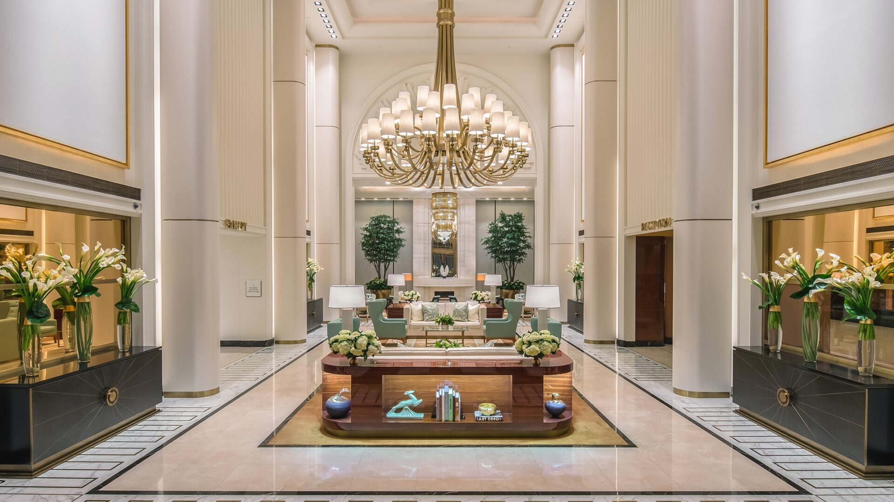
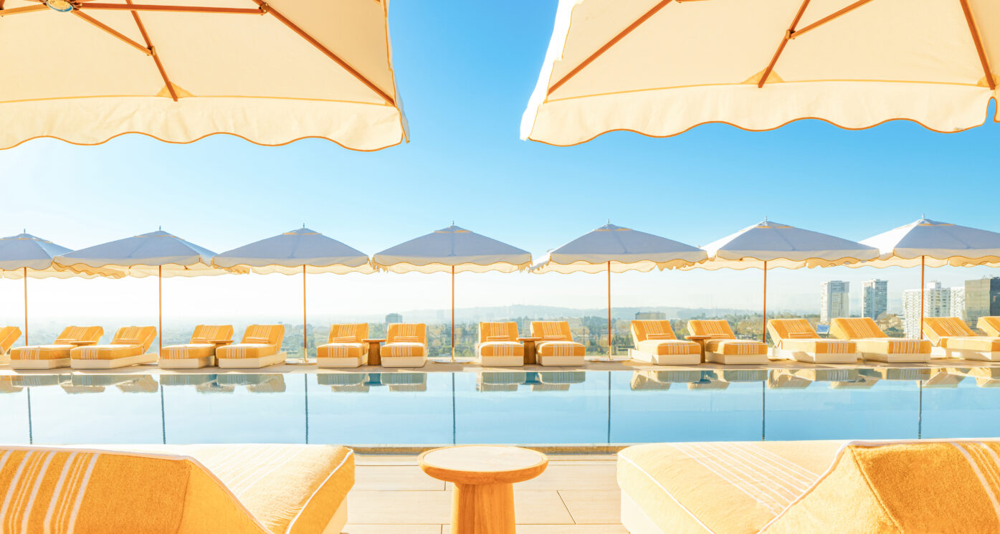
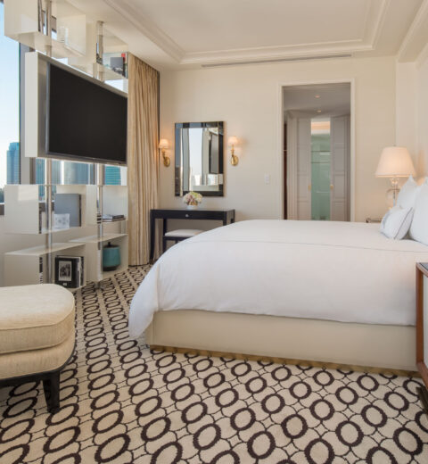

Beverly Hills Favorite
Waldorf Astoria Beverly Hills is the modern, polished Beverly Hills answer with the rooftop views to back it up.
Waldorf Astoria Beverly Hills feels newer, taller, and more panoramic than the classic Beverly Hills hotels. The rooms have a clean modern luxury feel, the service is polished, and the rooftop is a real reason to stay here if the client wants views, pool energy, and a stronger city-resort balance.
What makes it unique
The rooftop is the signature: Beverly Hills luxury with open-air views and a more modern rhythm.
This is the Beverly Hills hotel I would use when a client wants the area but does not want old-world Hollywood. It is cleaner, sleeker, and very easy for couples, business-luxury travelers, and VIPs who want a polished base with strong dining and spa access.
Best For
Modern Beverly Hills
Great for clients who want polish, views, and a less nostalgic hotel mood.
Known For
Rooftop and spa
The rooftop pool and dining are the easy headline, with a strong wellness component too.
Stay
Rooms and view suites
Use the suite categories when views and entertaining space are part of the trip.
Client Type
Couples and VIP city stays
Strong for celebratory travelers, business-luxury guests, and shorter Beverly Hills stays.



Rooms, suites, and views
The property is especially strong when the view matters. I would match clients to categories based on whether they want Beverly Hills views, a bigger terrace feeling, or a suite that can handle downtime and hosting.
Dining and activities
The rooftop is the major draw for pool days, sunset drinks, and Beverly Hills views. Add spa appointments, Rodeo Drive shopping, private dining, wellness time, and restaurant reservations across Beverly Hills and West Hollywood.
My honest take
This is the modern luxury pick. If the client wants old Hollywood, I would go Beverly Hills Hotel. If they want sleek, polished, and view-driven, Waldorf Astoria Beverly Hills makes a lot of sense.